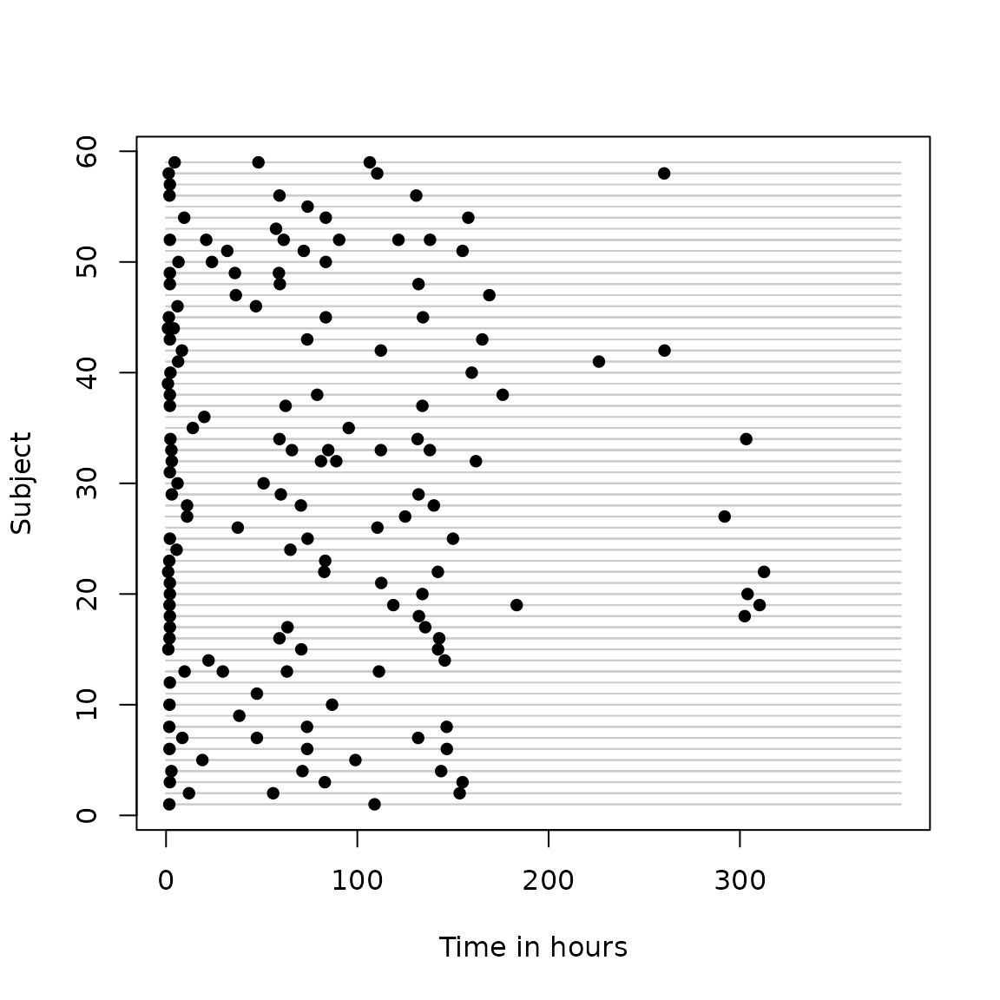

Analysis of longitudinal data with irregular observation times
Eleanor M. Pullenayegum
2026-01-23
Irreglong-vignette.RmdOverview
Longitudinal data often has follow-up times that are irregular and potentially related to outcomes. For example, in a clinic-based cohort study where all follow-up is part of usual care, patients may visit more often when unwell. This risks over-estimating the burden of disease unless data are analysed appropriately. For example, in a study of HIV positive mothers, Buzkova et al Buzkova, Brown, and John-Stewart (2010) found a two-fold over-estimation of the estimated prevalence of pneumonia when analysis ignored the fact that women were more likely to visit between scheduled visits when they were unwell.
There are two categories of methods available for analysing this type of data: methods based on inverse-intensity weighting, and methods based on semi-parametric joint models (see Pullenayegum and Lim (2016) for an overview). This package provides methods for inverse-intensity weighting.
Inverse-intensity weighting weights data by the reciprocal of the intensity (or, equivalently, the hazard) of the visit process. Inverse-intensity weighting works in a similar way to survey weighting: observations with a higher intensity are over-represented in the data, and hence should receive less weight. Conversely, observations with lower intensity are under-represented in the data, and hence receive more weight. Lin, Scharfstein, and Rosenheck (2004) show that inverse-intensity weighting followed by a marginal analysis with a generalized estimating equation (GEE) results in unbiased estimation, subject to the assumptions set out below. This package contains functions to compute inverse-intensity weights, and also to fit inverse-intensity weighted GEEs.
Sometimes inference may be desired for a model for which weighting is not straightforward, for example a generalized linear mixed model or a latent class mixed model. In these cases, multiple outputation is a useful alternative to inverse-intensity weighting.
Multiple outputation works by discarding (outputting) excess data (Hoffman, Sen, and Weinberg 2001; Follmann, Proschan, and Leifer 2003). Visits are randomly deleted from the dataset with probability inversely proportional to the visit intensity (Pullenayegum 2016). The resulting thinned visit process is independent of the outcome process (subject to the assumptions below), and can hence be analysed using standard methods. To avoid wasting data, the random deletion is repeated multiple times and the results from each analysis combined. Conceptually, multiple outputation is the opposite of multiple imputation: where multiple imputation imputes missing observations multiple times, multiple outputation discards excess observations multiple times. This package contains functions to create outputted datasets, as well as to combine results across multiple outputations.
Review of Inverse-intensity weighted GEEs
Suppose \(Y_i(t)\) is the outcome of interest for subject \(i\) at time \(t\), let \(X_i(t)\) be a possibly time-dependent covariate, and suppose interest is in the marginal model \[E(Y_i(t)|X_i(t))=X_i(t)\beta.\] Moreover, suppose that we observe \(Y_i\) only at times \(T_{i1},T_{i2},\ldots, T_{in_i}\). Let \(N_i(t)\) be the counting process for the visit times, that is \(N_i(t)=\sum_{j}I(T_{ij}\leq t)\), where \(I()\) is an indicator function. Suppose moreover that there is a vector of observed covariates \(Z_i(t)\) such that \[\lim_{\delta \downarrow 0} \frac{E(N(t)-N(t-\delta))|Y_i(t),Z_i(t))}{\delta}=\frac{E(N(t)-N(t-\delta))|Z_i(t))}{\delta}=\lambda(t;Z_i(t))\] for some hazard function \(\lambda\). If this assumption is not met, alternative methods of analysis should be considered (e.g. semi-parametric joint models).
The usual GEE equations will result in biased estimates of \(\beta\) since \[E(\sum_i\int_0^\tau X_i^\prime (Y_i(t) - X_i(t)\beta)dN_i(t)) =E(\sum_i\int_0^\tau X_i^\prime E((Y_i(t) - X_i(t)\beta)dN_i(t)\mid X_i(t)) \neq 0 \] Provided that the conditional independence assumption holds, consistent estimates of \(\beta\) may be obtained by weighting the GEE equations by \(sw_i(t)=s_0(t)/\lambda_i(t)\) \[E(\sum_i\int_0^\tau X_i^\prime sw_i(t)(Y_i(t) - X_i(t)\beta)dN_i(t)) =E(\sum_i\int_0^\tau X_i^\prime E(sw_i(t)(Y_i(t) - X_i(t)\beta)dN_i(t)\mid X_i(t),Y_i(t)) \\ = E(\sum_i\int_0^\tau X_i^\prime sw_i(t)(Y_i(t) - X_i(t)\beta)\lambda_i(t)dt=0. \]
Implementing Inverse-Intensity weighting
The first step in inverse-intensity weighting is to calculate the weights, usually by fitting a proportional hazards model to the recurrent event process formed by the visit times. That is, one fits the model \[\lambda(t;Z_i(t))=\lambda_0(t)\exp(Z_i(t)\gamma).\] This can be done using the coxph function, however the data usually requires some pre-processing. Firstly, the counting process formulation takes the form Surv(start.time,stop.time,event) and so typically requires the time variable to be lagged. Time-varying covariates will often need to be lagged as well. Secondly, if follow-up was stopped at a time later than the last visit, then additional rows capturing the censoring time must be added to the dataset. For example, if follow-up is stopped after two years, and an individual’s last visit is at 1.5 years, then we must include the information that there was no visit between 1.5 years and two years when estimating the visit intensity model. Using the data on just the observed visits ignores this.
The IrregLong package simplifies modelling of the visit process by creating a dataset with lagged variables (specified using lagvars=) and time intervals corresponding to censoring times (specified using maxfu=).
The inverse-intensity weight is \(w_i(t) = \frac{\exp(-Z_i(t)\gamma)}{\lambda_0(t)}\). Following Buzkova and Lumley (2007), all inverse-intensity weights in this package are stabilized by the baseline hazard \(\lambda_0(t)\), so that the stabilized weight is \(sw_i(t)=\exp(-Z_i(t)\gamma)\). In some settings one may additionally wish to stabilize by a function of the time-invariant covariates in \(X_i(t)\), and an option to do so is included in the functions. One can then fit a GEE to obtain the regression coefficients \(\beta\) corresponding to regressing \(Y_i(t)\) on \(X_i(t)\), weighting by \(sw_i(t)\).
An important practical point is that when using inverse-intensity weighting the working variance for the GEE must be set to the identity. This is because functions for fitting GEEs interpret the weights as indicating heteroscedasticity. Thus if \(Y_i\) is the vector of observations for subject \(i\), \(X_i\) is the matrix of corresponding covariates, \(R_i\) is the working variance matrix and \(D_i\) is a diagonal matrix whose \(jj\) entry of the weight for the \(j^{th}\) observation for subject \(i\), then standard GEE software solves \[\sum_iX_i^\prime D_i^{1/2}R_i^{-1}D_i^{1/2}(Y_i-X_i\beta)=0,\] whereas we wish to solve \[\sum_iX_i^\prime R_i^{-1}D_i(Y_i-X_i\beta)=0.\] The two are, however, identical if \(R_i\) is the identity matrix. While at first glance it may seem appealing to create a GEE estimation function that implements the weights as desired so as to allow for non-diagonal working variance matrices, note that the working variance should then be the variance of \(D_i(Y_i-X_i\beta)\) rather than \((Y_i-X_i\beta)\). Since the weights usually involve time-dependent covariates that are often internal, the standard correlation structures (exchangeable, autoregressive) become less plausible.
Example
These methods are illustrated using the Phenobarb dataset from the MEMSS package. Routine clinical pharmacokinetic data were collected from 59 preterm infants who received phenobarbital in order to prevent seizures. Blood draws were taken to determine serum concentration of phenobarbital, with the timing and number of draws varying among infants. For the purposes of illustration this analysis focuses not on pharmacokinetics but on the mean serum concentration of phenobarbital over time.
This dataset contains some rows corresponding to times at which phenobarbital given and others at which a blood draw was taken to determine serum phenobarbital concentration. For the visit intensity model, the event of interest is having a concentration measured, so we set the variable event=1 if concentration was measured and zero otherwise. The data is then restricted to those time points when a concentration measurement was taken. The original pharmacokinetic analysis restricts attention to the first 16 days of life, which we also do here.
data(Phenobarb)
Phenobarb$event <- 1-as.numeric(is.na(Phenobarb$conc))
data <- Phenobarb
data <- data[data$event==1,]
data$id <- as.numeric(data$Subject)
data <- data[data$time<16*24,]
data <- data[order(data$id,data$time),]
head(data)## Grouped Data: conc ~ time | Subject
## Subject Wt Apgar ApgarInd time dose conc event id
## 544 42 2.8 9 >= 5 14.0 NA 13.3 1 1
## 551 42 2.8 9 >= 5 95.5 NA 13.9 1 1
## 400 28 3.2 9 >= 5 2.0 NA 16.9 1 2
## 408 30 1.8 8 >= 5 6.3 NA 17.9 1 3
## 420 30 1.8 8 >= 5 226.3 NA 16.5 1 3
## 701 56 0.6 4 < 5 20.0 NA 18.8 1 4It can be helpful to begin by exploring the extent of visit irregularity. We begin with some simple summary statistics of the number of events per Subject, then plot times of measurement for each subjects.
## Min. 1st Qu. Median Mean 3rd Qu. Max.
## 1.00 2.00 3.00 2.61 3.00 6.00
abacus.plot(n=59,time="time",id="Subject",data=data,tmin=0,tmax=16*24,
xlab.abacus="Time in hours",pch=16,col.abacus=gray(0.8))
This shows an median of 3 visits per subject with a range of 1 to 6. The plot shows that after an initial measurement shortly after birth, observations times vary among subjects.
The extent of irregularity can be further explored through a visit frequency plot. This plot is derived by dividing the time interval of interest into sets of bins with bin widths becoming increasingly wider across sets. For each set of bins, the mean proportion of individuals with 0, 1 or >1 visit per bin is calculated. This is then plotted against either the number of bins or some other measure of bin width. When the study protocol does not specify recommended visit times, sets of bins can be defined either as intervals of equal widths (with different numbers of bins in each set), or as intervals for which the expected number of visits per bin is constant across bins (again, with varying numbers of bins in each set). The expected number of visits in a bin is simply the area under the cumulative hazard for that bin. The visit frequency plot shows that the mean proportion of individuals with 1 visit per bin is highest at 0.5 with 3 bins, and is clearly not consistent with repeated measures. Finally, the area under the curve (AUC) when the proportion of subjects with \(>1\) visits per bin is plotted against the proportion of subjects with \(0\) visits per bin can be used as a numeric summary of the extent of irregularity. For perfect repeated measures, the AUC is 0; for a Poisson process, the AUC is 0.25. A log transformed version of the AUC is also available; for this version perfect repeated measures has a value of zero while a Poisson process has an AUC of 100. The AUC in this example is 0.18, with a transformed value of 64, demonstrating a high degree of irregularity.
counts <- extent.of.irregularity(data,time="time",id="id",
scheduledtimes=NULL, cutpoints=NULL,ncutpts=50,
maxfu=16*24, plot=TRUE,legendx=30,legendy=0.8,
formula=Surv(time.lag,time,event)~1,tau=16*24)
counts$auc## [1] 0.1814126
counts$transformed.auc## [1] 65.02388To fit an inverse intensity weighted GEE, one begins by modelling the visit intensity. Although the IrregLong package includes a function that calculates both the inverse-intensity weights and the weighted GEE in a single command, it can be helpful to start by focussing on the visit intensity model. Modelling is usually done through a Cox proportional hazards model on the recurrent visit process. To do this, we need to specify time periods at risk, and so need to lag the time variable. If there are time-dependent covariates and we suspect that the value at the last measurement is predictive of when the next measurement will be taken, these time-dependent covariates must also be lagged. The IrregLong package simplifies this process by allowing the user to specify which covariates should be lagged (lagvars=c(“time”,“conc”)) and creating these lagged covariates internally (time.lag,conc.lag). The value of the lagged variables will by default be missing for the first observation in each subject, but this can be changed through the lagfirst argument. We set the lagged value of time at the first observed blood draw to be zero (lagfirst=0) since observation started at birth for all infants. Similarly, we set the lagged value of serum phenobarbital concentration to be zero at the first draw, since the last known value of serum concentration was at birth, prior to administration of phenobarbital, and allow for a non-linear relationship between concentration and log visit intensity.
data$Apgar <- as.numeric(data$Apgar)
i <- iiw.weights(Surv(time.lag,time,event)~Wt + Apgar +
I(conc.lag>0 & conc.lag<=20) +
I(conc.lag>20 & conc.lag<=30) + I(conc.lag>30)+
cluster(Subject),id="Subject",time="time",event="event",data=data,
invariant=c("Subject","Wt","Apgar"),lagvars=c("time","conc"),maxfu=16*24,
lagfirst=c(0,0),first=FALSE)
i$m## Call:
## coxph(formula = Surv(time.lag, time, event) ~ Wt + Apgar + I(conc.lag >
## 0 & conc.lag <= 20) + I(conc.lag > 20 & conc.lag <= 30) +
## I(conc.lag > 30), data = datacox, cluster = Subject)
##
## coef exp(coef) se(coef) robust se
## Wt -0.133775 0.874787 0.126385 0.117649
## Apgar -0.002765 0.997239 0.039417 0.045185
## I(conc.lag > 0 & conc.lag <= 20)TRUE -2.264475 0.103885 0.330413 0.403114
## I(conc.lag > 20 & conc.lag <= 30)TRUE -2.664957 0.069602 0.334704 0.375708
## I(conc.lag > 30)TRUE -2.993505 0.050111 0.428129 0.467288
## z p
## Wt -1.137 0.256
## Apgar -0.061 0.951
## I(conc.lag > 0 & conc.lag <= 20)TRUE -5.617 1.94e-08
## I(conc.lag > 20 & conc.lag <= 30)TRUE -7.093 1.31e-12
## I(conc.lag > 30)TRUE -6.406 1.49e-10
##
## Likelihood ratio test=70.86 on 5 df, p=6.777e-14
## n= 213, number of events= 154Since Apgar score and birthweight are not significant, we consider whether the model can be simplified - first by including Apgar score as an indicator (\(\geq 5\) vs. \(<5\)), then by removing variables that are not significant.
i <- iiw.weights(Surv(time.lag,time,event)~Wt + ApgarInd + I(conc.lag>0 & conc.lag<=20) +
I(conc.lag>20 & conc.lag<=30) + I(conc.lag>30)+
cluster(Subject),id="Subject",time="time",event="event",data=data,
invariant=c("Subject","Wt","ApgarInd"),lagvars=c("time","conc"), maxfu=16*24,lagfirst=c(0,0),first=FALSE)
i$m## Call:
## coxph(formula = Surv(time.lag, time, event) ~ Wt + ApgarInd +
## I(conc.lag > 0 & conc.lag <= 20) + I(conc.lag > 20 & conc.lag <=
## 30) + I(conc.lag > 30), data = datacox, cluster = Subject)
##
## coef exp(coef) se(coef) robust se
## Wt -0.16625 0.84683 0.12404 0.12749
## ApgarInd>= 5 0.29125 1.33810 0.22949 0.34827
## I(conc.lag > 0 & conc.lag <= 20)TRUE -2.35868 0.09455 0.34240 0.37226
## I(conc.lag > 20 & conc.lag <= 30)TRUE -2.75127 0.06385 0.34814 0.32775
## I(conc.lag > 30)TRUE -3.11277 0.04448 0.44268 0.44155
## z p
## Wt -1.304 0.192
## ApgarInd>= 5 0.836 0.403
## I(conc.lag > 0 & conc.lag <= 20)TRUE -6.336 2.36e-10
## I(conc.lag > 20 & conc.lag <= 30)TRUE -8.395 < 2e-16
## I(conc.lag > 30)TRUE -7.050 1.79e-12
##
## Likelihood ratio test=72.57 on 5 df, p=2.994e-14
## n= 213, number of events= 154
i <- iiw.weights(Surv(time.lag,time,event)~Wt + I(conc.lag>0 & conc.lag<=20) +
I(conc.lag>20 & conc.lag<=30) + I(conc.lag>30)+
cluster(Subject),id="Subject",time="time",event="event",data=data,
invariant=c("Subject","Wt"),lagvars=c("time","conc"),maxfu=16*24,lagfirst=c(0,0),first=FALSE)
i$m## Call:
## coxph(formula = Surv(time.lag, time, event) ~ Wt + I(conc.lag >
## 0 & conc.lag <= 20) + I(conc.lag > 20 & conc.lag <= 30) +
## I(conc.lag > 30), data = datacox, cluster = Subject)
##
## coef exp(coef) se(coef) robust se
## Wt -0.13679 0.87215 0.11897 0.11778
## I(conc.lag > 0 & conc.lag <= 20)TRUE -2.26719 0.10360 0.32831 0.40747
## I(conc.lag > 20 & conc.lag <= 30)TRUE -2.66595 0.06953 0.33457 0.37910
## I(conc.lag > 30)TRUE -2.99587 0.04999 0.42698 0.47295
## z p
## Wt -1.161 0.245
## I(conc.lag > 0 & conc.lag <= 20)TRUE -5.564 2.63e-08
## I(conc.lag > 20 & conc.lag <= 30)TRUE -7.032 2.03e-12
## I(conc.lag > 30)TRUE -6.334 2.38e-10
##
## Likelihood ratio test=70.86 on 4 df, p=1.496e-14
## n= 213, number of events= 154
i <- iiw.weights(Surv(time.lag,time,event)~I(conc.lag>0 & conc.lag<=20) +
I(conc.lag>20 & conc.lag<=30) + I(conc.lag>30) +
cluster(Subject),id="Subject",time="time",event="event",data=data,
invariant=c("Subject","Wt"),lagvars=c("time","conc"),maxfu=16*24,lagfirst=c(0,0),first=FALSE)
i$m## Call:
## coxph(formula = Surv(time.lag, time, event) ~ I(conc.lag > 0 &
## conc.lag <= 20) + I(conc.lag > 20 & conc.lag <= 30) + I(conc.lag >
## 30), data = datacox, cluster = Subject)
##
## coef exp(coef) se(coef) robust se
## I(conc.lag > 0 & conc.lag <= 20)TRUE -2.27453 0.10284 0.33148 0.40497
## I(conc.lag > 20 & conc.lag <= 30)TRUE -2.67331 0.06902 0.33681 0.37398
## I(conc.lag > 30)TRUE -2.99982 0.04980 0.42794 0.46762
## z p
## I(conc.lag > 0 & conc.lag <= 20)TRUE -5.617 1.95e-08
## I(conc.lag > 20 & conc.lag <= 30)TRUE -7.148 8.79e-13
## I(conc.lag > 30)TRUE -6.415 1.41e-10
##
## Likelihood ratio test=69.47 on 3 df, p=5.542e-15
## n= 213, number of events= 154It thus appears that last concentration is predictive of the time to the next concentration measurement.
Having established a model for the visit intensity, we now turn to modelling the serum concentration as a function of time. A plot of concentration over time shows that the relationship is unlikely to be linear, even in the weighted data. We thus use fractional polynomials to model the shape of the association over time.

Fractional polynomials consider powers of -2, -1, -0.5, 0.5, 1, 2, 3, and a log-transform, and use the best-fitting from among these. Since weighting tends not to lead to dramatic changes in the shape of the relationship between outcome and covariates, we use the unweighted data to choose the functional form of time, and use the adjusted R-squared as a measure of goodness of fit.
rsq1 <- array(dim=8)
rsq1[1] <- summary(lm(conc~time,data=data))$adj.r.squared
rsq1[2] <- summary(lm(conc~I((time)^0.5),data=data))$adj.r.squared
rsq1[3] <- summary(lm(conc~I((time)^2),data=data))$adj.r.squared
rsq1[4] <- summary(lm(conc~I((time)^3),data=data))$adj.r.squared
rsq1[5] <- summary(lm(conc~log(time),data=data))$adj.r.squared
rsq1[6] <- summary(lm(conc~I((time)^(-0.5)),data=data))$adj.r.squared
rsq1[7] <- summary(lm(conc~I((time)^(-1)),data=data))$adj.r.squared
rsq1[8] <- summary(lm(conc~I((time)^(-2)),data=data))$adj.r.squared
which.max(rsq1)## [1] 5
rsq1[which.max(rsq1)]## [1] 0.1952896Based on this, we choose the log transform of time, and now-consider whether a second order fractional polynomial would improve the fit. This involves adding, in turn, each of the powers previously considered, as well as \(time\times\log(time)\).
rsq2 <- array(dim=8)
rsq2[1] <- summary(lm(conc~log(time)+ time,data=data))$adj.r.squared
rsq2[2] <- summary(lm(conc~log(time)+ I((time)^0.5),data=data))$adj.r.squared
rsq2[3] <- summary(lm(conc~log(time) + I((time)^2),data=data))$adj.r.squared
rsq2[4] <- summary(lm(conc~log(time)+ I((time)^3),data=data))$adj.r.squared
rsq2[5] <- summary(lm(conc~log(time)+ time:log(time),data=data))$adj.r.squared
rsq2[6] <- summary(lm(conc~log(time) + I((time)^(-0.5))*log(1+time),data=data))$adj.r.squared
rsq2[7] <- summary(lm(conc~log(time) + I((time)^(-1)),data=data))$adj.r.squared
rsq2[8] <- summary(lm(conc~log(time)+ I((time)^(-2)),data=data))$adj.r.squared
which.max(rsq2)## [1] 4
rsq2[which.max(rsq2)]## [1] 0.3468345We thus use time^3 and log(time) to describe concentration over time. We also check for the best functional form in the weighted data:
rsq1 <- array(dim=8)
rsq1[1] <- summary(lm(conc~time,data=data,weight=i$iiw.weight))$adj.r.squared
rsq1[2] <- summary(lm(conc~I((time)^0.5),data=data,weight=i$iiw.weight))$adj.r.squared
rsq1[3] <- summary(lm(conc~I((time)^2),data=data,weight=i$iiw.weight))$adj.r.squared
rsq1[4] <- summary(lm(conc~I((time)^3),data=data,weight=i$iiw.weight))$adj.r.squared
rsq1[5] <- summary(lm(conc~log(time),data=data,weight=i$iiw.weight))$adj.r.squared
rsq1[6] <- summary(lm(conc~I((time)^(-0.5)),data=data,weight=i$iiw.weight))$adj.r.squared
rsq1[7] <- summary(lm(conc~I((time)^(-1)),data=data,weight=i$iiw.weight))$adj.r.squared
rsq1[8] <- summary(lm(conc~I((time)^(-2)),data=data,weight=i$iiw.weight))$adj.r.squared
which.max(rsq1)## [1] 4
rsq1[which.max(rsq1)]## [1] 0.163227
rsq1 <- array(dim=8)
rsq1[1] <- summary(lm(conc~I((time)^3) +time,data=data,weight=i$iiw.weight))$adj.r.squared
rsq1[2] <- summary(lm(conc~I((time)^3) +I((time)^0.5),data=data,weight=i$iiw.weight))$adj.r.squared
rsq1[3] <- summary(lm(conc~I((time)^3) +I((time)^2),data=data,weight=i$iiw.weight))$adj.r.squared
rsq1[4] <- summary(lm(conc~I((time)^3) + log(time):I(time^3),data=data,weight=i$iiw.weight))$adj.r.squared
rsq1[5] <- summary(lm(conc~I((time)^3) +log(time),data=data,weight=i$iiw.weight))$adj.r.squared
rsq1[6] <- summary(lm(conc~I((time)^3) +I((time)^(-0.5)),data=data,weight=i$iiw.weight))$adj.r.squared
rsq1[7] <- summary(lm(conc~I((time)^3) +I((time)^(-1)),data=data,weight=i$iiw.weight))$adj.r.squared
rsq1[8] <- summary(lm(conc~I((time)^3) +I((time)^(-2)),data=data,weight=i$iiw.weight))$adj.r.squared
which.max(rsq1)## [1] 1
rsq1[which.max(rsq1)]## [1] 0.3353907In all models, we thus use time, time^3, and log(time). The inverse-intensity-weighted GEE can be fitted using the function iiwgee. This function specifies first the formula for the GEE, then the formula for the inverse intensity weights.
data$logtime <- log(data$time)
data$time3 <- (data$time^3)/(mean(data$time^3))
iiwgee <- iiwgee(conc ~ time + time3 + logtime,Surv(time.lag,time,event)~I(conc.lag>0 & conc.lag<=20) +
I(conc.lag>20 & conc.lag<=30) + I(conc.lag>30) +cluster(id),
formulanull=NULL,id="id",time="time",event="event",data=data,
invariant=c("id","Wt"),lagvars=c("time","conc"),maxfu=16*24,lagfirst=c(0,0),first=FALSE)Note that the iiwgee function does not include an option for the working variance. As discussed above, when working with inverse-intensity weights, the working variance should always be the identity. The iiwgee function returns the inverse-intensity weighted GEE fit:
summary(iiwgee$geefit)##
## Call:
## geeglm(formula = formulagee, family = family, data = data, weights = useweight,
## id = iddup, corstr = "independence")
##
## Coefficients:
## Estimate Std.err Wald Pr(>|W|)
## (Intercept) 19.12361 1.26785 227.512 < 2e-16 ***
## time 0.10595 0.02571 16.988 3.76e-05 ***
## time3 -3.32748 0.47097 49.917 1.60e-12 ***
## logtime 0.75007 0.75829 0.978 0.323
## ---
## Signif. codes: 0 '***' 0.001 '**' 0.01 '*' 0.05 '.' 0.1 ' ' 1
##
## Correlation structure = independence
## Estimated Scale Parameters:
##
## Estimate Std.err
## (Intercept) 57.87 27.08
## Number of clusters: 59 Maximum cluster size: 6For comparison, we also fit the unweighted GEE, and plot the two serum concentration trajectories
m <- geeglm(conc ~ time + I(time^3) + log(time) , id=Subject, data=data)
time <- (2:200)
unweighted <- cbind(rep(1,199),time,time^3,log(time))%*%m$coefficients
weighted <- cbind(rep(1,199),time,time^3/mean(data$time^3),log(time))%*%iiwgee$geefit$coefficients
plot(data$time,data$conc,xlim=c(0,199),ylim=c(min(unweighted,weighted,data$conc),max(unweighted,weighted,data$conc)),pch=16,xlab="Time",ylab="Serum phenobarbital concentration")
lines(time,unweighted,type="l")
lines(time,weighted,col=2)
legend (0,60,legend=c("Unweighted","Inverse-intensity weighted"),col=1:2,bty="n",lty=1)
The iiwgee function also returns the fitted visit intensity model:
summary(iiwgee$phfit)## Call:
## coxph(formula = Surv(time.lag, time, event) ~ I(conc.lag > 0 &
## conc.lag <= 20) + I(conc.lag > 20 & conc.lag <= 30) + I(conc.lag >
## 30), data = datacox, cluster = id)
##
## n= 213, number of events= 154
##
## coef exp(coef) se(coef) robust se
## I(conc.lag > 0 & conc.lag <= 20)TRUE -2.2745 0.1028 0.3315 0.4050
## I(conc.lag > 20 & conc.lag <= 30)TRUE -2.6733 0.0690 0.3368 0.3740
## I(conc.lag > 30)TRUE -2.9998 0.0498 0.4279 0.4676
## z Pr(>|z|)
## I(conc.lag > 0 & conc.lag <= 20)TRUE -5.62 1.9e-08 ***
## I(conc.lag > 20 & conc.lag <= 30)TRUE -7.15 8.8e-13 ***
## I(conc.lag > 30)TRUE -6.42 1.4e-10 ***
## ---
## Signif. codes: 0 '***' 0.001 '**' 0.01 '*' 0.05 '.' 0.1 ' ' 1
##
## exp(coef) exp(-coef) lower .95 upper .95
## I(conc.lag > 0 & conc.lag <= 20)TRUE 0.1028 9.72 0.0465 0.227
## I(conc.lag > 20 & conc.lag <= 30)TRUE 0.0690 14.49 0.0332 0.144
## I(conc.lag > 30)TRUE 0.0498 20.08 0.0199 0.125
##
## Concordance= 0.624 (se = 0.014 )
## Likelihood ratio test= 69.5 on 3 df, p=6e-15
## Wald test = 54.4 on 3 df, p=9e-12
## Score (logrank) test = 69.1 on 3 df, p=7e-15, Robust = 56.1 p=4e-12
##
## (Note: the likelihood ratio and score tests assume independence of
## observations within a cluster, the Wald and robust score tests do not).Multiple Outputation
Once the inverse-intensity weights have been calculated, an alternative use for them is to perform multiple outputation. When some of the weights are very large, this can result in very small outputted datasets, and so it can be helpful to truncate the weights. Moreover, the smaller sample size of each outputted dataset results in collinearity on including all three functions of time, so for this analysis we use time and time^3 only, as these were the best fit in the weighted data. The code below computes 20 outputted datasets, analyses each using an unweighted GEE, then combines the results.
library(geesmv)
reg <- function(data){
m <- geeglm(conc~time + I(time^3), id=id,data=data)
est <- summary(m)$coefficients[,1:2]
if(max(table(data$id))>1) est[,2] <- GEE.var.md(conc~time + I(time^3) , id=id,data=data)$cov.beta
est <- data.matrix(est)
return(est)
}
set.seed(301031)
wt <- i$iiw.weight
wt[wt>quantile(i$iiw.weight,0.95)] <- quantile(i$iiw.weight,0.95)
m.mogee <- mo(20,reg,data,wt, singleobs=FALSE,id="id",time="time",keep.first=FALSE,var=TRUE)
m.mogeeThe multiple outputation estimates of the regression coefficients
($est), and is the mean across outputations of the GEE
estimates. The multiple outputation standard error ($se) is
a function of both the within outputation standard errors and the
between outputation variance. The relative efficiency of using 20
outputations in place of all possible outputations is given by
RE.MO. In this example the number of observations per
subject becomes small on outputation, resulting in the usual sandwich
variance estimator for the GEE underestimating the standard error. For
this reason, we use a small sample sandwich variance correction from the
“geesmv” package. There are a number of options available, and in this
example we have used the Mancl deRouen correction (Mancl and DeRouen 2001). The multiple
outputation estimates based on the above seed were 16.0 (SE 1.53),
-7.72e-07 (SE 1.16e-07) and 3.42 (SE 5.52) for the intercept, \(time\), and \(time^3\) respectively. The relative
efficiencies were 1.01, 1.008, and 1.008, suggesting that there is
little to be gained by running more outputations.
Multiple outputation is helpful for analyses where weighting is difficult to implement. One such example is a semi-parametric joint model. Semi-parametric joint models are useful when there are latent variables that influence both the outcome and visit processes. We consider the Liang (Liang, Lu, and Ying 2009) semi-parametric joint model: \[Y_i(t)=\beta_0(t) + X_i(t)\beta + W_i(t)\nu_{i1} + \epsilon_i(t) \] \[\lambda_i(t)=\nu_{i2}\lambda_0(t)\exp(U_i\gamma) \] where \(W_i(t)\) is a subset of the covariates \(X_i(t)\), \(U_i\) is a vector of baseline covariates, \(\epsilon_i(t)\) is a mean-zero random error, and \(\nu_{i1}\), \(\nu_{i2}\) are (potentially correlated) random effects.
The Liang model requires that the covariates in the model for the visits be time invariant. In practice, \[\lambda_i(t)=\nu_{i2}\lambda_0(t)\exp(Z_i(t)\gamma), \] for an observed vector of time-dependent auxiliary covariates \(Z_i(t)\) may be more reasonable. Multiple outputation makes inference under this model possible by creating outputted datasets in which the visit process does not depend on the observed covariates \(Z_i(t)\). These datasets can be analysed using Liang’s method for the special case where there are no covariates in the visit process model.
Example
We consider the same example as before, now examining whether the
concentration differs between those with an Apgar score <5 at birth
and those with a score >=5, and allowing a random intercept that is
potentially correlated with a frailty variable in the visit process.
That is, we take \[conc_i(t)=\beta_0(t) +
\beta_1I(Apgar_i<5) + \beta_2I(Apgar\geq 5)t + \beta_3I(Apgar\geq
5)t^3 + \nu_{i1} + \epsilon_i(t),\] with visit process model
given by \[\lambda_i(t)=\nu_{i2}\lambda_0(t)\exp(I(0<conc_i(T_{iN_i(t^-)})\leq
20)\gamma_1 + I(20< conc_i(T_{iN_i(t^-)})\leq 30)\gamma_2 +\\
I(conc_i(T_{iN_i(t^-)})> 30)\gamma_3, \] where \(\nu_{i1}=(\nu_{i11},\nu_{i12})^\prime\) and
\(\nu_{i2}\) are potentially correlated
with \(E(\nu_{i1}\mid\nu_{i2})=\theta(\nu_{i2}-1)\)
for some \(\theta\). Note that when
calculating the weights used for outputation, the
frailty=TRUE option should be used in visit intensity
calculation because the lagged concentration is an internal covariate
that is potentially correlated with the frailty variable, and the Cox
model is non-collapsible. For this analysis, time is transformed to days
rather than hours to avoid computational problems with the Liang
function.
Liangmo <- function(data,Yname,Xnames,Wnames,maxfu,baseline){
x <- Liang(data=data,Yname=Yname,Xnames=Xnames,Wnames=Wnames,id="id",time="time",
maxfu=maxfu,baseline=baseline,Xfn=Xfn,Wfn=Wfn); print(x); return(x)
}
Xfn <- function(id,time){
# Group is time invariant so just use the first value for each subject
return(as.numeric(data$ApgarInd[data$id==id][1]))
}
Wfn <- function(id,time){
return(c(1,time))
}
data$Intercept <- 1
data$time3 <- (data$time)^3
data$logtime <- log(data$time)
data$ApgarInd.time <- as.numeric(data$ApgarInd)*data$time/24
data$ApgarInd.time3 <- as.numeric(data$ApgarInd)*((data$time/24)^3)
set.seed(301031)
ifrailty <- iiw.weights(Surv(time.lag,time,event)~I(conc.lag>0 & conc.lag<=20) +
I(conc.lag>20 & conc.lag<=30) + I(conc.lag>30)
+frailty(id),id="id",time="time",event="event",data=data,
invariant=c("id"),lagvars=c("time","conc"),maxfu=16*24,
lagfirst=c(0,0), first=FALSE)
wt <- ifrailty$iiw.weight
m.moLiang <- mo(20,Liangmo,data,wt,
singleobs=FALSE,id="id",time="time",keep.first=FALSE,var=FALSE,Yname="conc",
Xnames=c("ApgarInd","ApgarInd.time","ApgarInd.time3"),
Wnames=c("Intercept"),maxfu=16*24,baseline=0)
m.moLiang$est
m.moLiang$est## [1] -19.99695 5.37236 -0.02748 NA 0.00000The first three coefficients represent for the Apgar score, its interaction with time, and its interaction with time^3 respectively, while the fourth coefficient is the estimated value of \(\theta\) and the final entry is the estimated variance of the frailty variable in the visit process model. Since in this case the estimated frailty is zero, we can conclude that the Liang model is not needed.